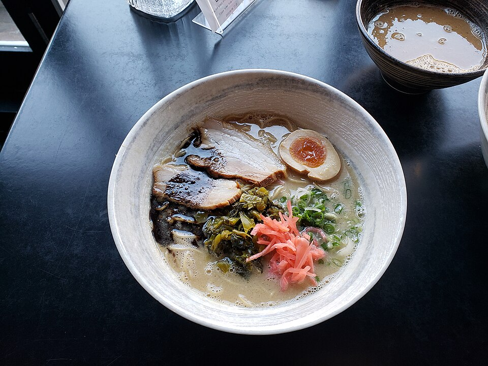

Mastered In Ballantyne • Scratch Kitchen
Ramen Bowls, Starters & Donburi.
From sixteen-hour simmered pork bone tonkotsu to delicately balanced clear chicken dashi, explore our complete lineup of artisanal ramen bowls, crispy izakaya appetizers, and savory Japanese rice bowls in South Charlotte.

Ramen & Izakaya
16-Hour Broth & Handmade Plates